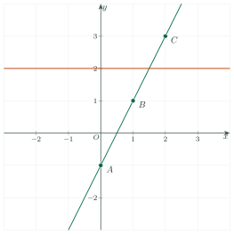
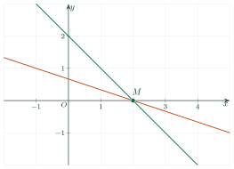
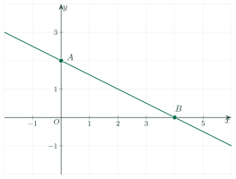

Linear Equations and Systems of Linear Equations in Two VariablesKhái niệm phương trình và hệ hai phương trình bậc nhất hai ẩn
Grade 9 · Topic: Linear Equations and Systems of Linear Equations in Two VariablesLớp 9 · Chủ đề: Phương trình và hệ hai phương trình bậc nhất hai ẩn
1Lesson IntroductionGiới thiệu bài học
Learning goalsMục tiêu bài học
By the end of this lesson you can:
Sau bài học này, em có thể:
recognize a linear equation in two variables \(ax+by=c\) and its coefficients;
nhận biết phương trình bậc nhất hai ẩn \(ax+by=c\) và các hệ số của nó;
check whether an ordered pair is a solution of an equation or of a system;
kiểm tra một cặp số có là nghiệm của phương trình hoặc của hệ phương trình hay không;
write the general solution and draw the line that represents all solutions;
viết nghiệm tổng quát và vẽ đường thẳng biểu diễn tập nghiệm;
recognize a system of two linear equations in two variables and write one for a real situation.
nhận biết hệ hai phương trình bậc nhất hai ẩn và lập hệ cho một tình huống thực tế.
2Mathematical VocabularyTừ vựng Toán học
linear equation in two variables – an equation \(ax+by=c\) where \(a\) and \(b\) are not both 0.
Phương trình bậc nhất hai ẩn – phương trình dạng \(ax+by=c\), trong đó \(a\) và \(b\) không đồng thời bằng 0.
coefficient – the numbers \(a, b, c\) in \(ax+by=c\). Example: \(3x-2y=7\) has \(a=3,\ b=-2,\ c=7\).
Hệ số – các số \(a, b, c\) trong \(ax+by=c\). Ví dụ: \(3x-2y=7\) có \(a=3,\ b=-2,\ c=7\).
ordered pair – two numbers written in order, \((x_0;\ y_0)\).
Cặp số – hai số viết theo thứ tự, \((x_0;\ y_0)\).
solution – an ordered pair that makes the equation true.
Nghiệm – cặp số làm cho phương trình trở thành đẳng thức đúng.
general solution – a formula that describes all solutions, e.g. \((x;\ 2x-1)\).
Nghiệm tổng quát – cách viết mô tả mọi nghiệm, ví dụ \((x;\ 2x-1)\).
coordinate plane – the plane with the axes \(Ox\) and \(Oy\).
Mặt phẳng tọa độ – mặt phẳng có hai trục \(Ox\) và \(Oy\).
system of two linear equations in two variables – two such equations considered together.
Hệ hai phương trình bậc nhất hai ẩn – hai phương trình bậc nhất hai ẩn được xét đồng thời.
infinitely many solutions – more solutions than we can count.
Vô số nghiệm – có nhiều nghiệm đến mức không đếm hết.
intersect / coincide – two lines meet at one point / lie on top of each other.
Cắt nhau / trùng nhau – hai đường thẳng có một điểm chung / nằm chồng lên nhau.
3Useful English PhrasesCụm từ tiếng Anh thường gặp
Identify the coefficients \(a\), \(b\) and \(c\).
Xác định các hệ số \(a\), \(b\) và \(c\).
Which of the following equations are linear equations in two variables?
Phương trình nào sau đây là phương trình bậc nhất hai ẩn?
Check if the ordered pair is a solution of the equation / system of equations.
Kiểm tra cặp số có là nghiệm của phương trình / hệ phương trình không.
Substitute \(x=\dots\), \(y=\dots\) into the equation.
Thay \(x=\dots\), \(y=\dots\) vào phương trình.
Write the general solution and graph it on the coordinate plane.
Viết nghiệm tổng quát và biểu diễn trên mặt phẳng tọa độ.
Find the value of \(m\) so that …
Tìm giá trị của \(m\) để …
4Prerequisite ReviewÔn tập kiến thức nền
Linear equation in one variable. \(ax+b=0\) with \(a\ne0\) has exactly one solution \(x=-\dfrac{b}{a}\). Example: \(2x-6=0\Leftrightarrow x=3\).
Phương trình bậc nhất một ẩn. \(ax+b=0\) với \(a\ne0\) có đúng một nghiệm \(x=-\dfrac{b}{a}\). Ví dụ: \(2x-6=0\Leftrightarrow x=3\).
Graph of \(y=ax+b\). On the coordinate plane it is a straight line. Two points are enough to draw it, for example the points with \(x=0\) and \(y=0\).
Đồ thị hàm số \(y=ax+b\). Trên mặt phẳng tọa độ, đồ thị là một đường thẳng. Chỉ cần hai điểm để vẽ, chẳng hạn điểm có \(x=0\) và điểm có \(y=0\).
5TheoryLý thuyết
5.1 Linear equations in two variablesPhương trình bậc nhất hai ẩn
DefinitionĐịnh nghĩa
A linear equation in two variables \(x\) and \(y\) is an equation of the form \(ax+by=c\), where \(a, b, c\) are known numbers and \(a, b\) are not both 0.
Phương trình bậc nhất hai ẩn \(x\) và \(y\) là phương trình dạng \(ax+by=c\), trong đó \(a, b, c\) là các số đã biết và \(a, b\) không đồng thời bằng 0.
If \(ax_0+by_0=c\) is a true equality, the ordered pair \((x_0;\ y_0)\) is called a solution of the equation.
Nếu \(ax_0+by_0=c\) là đẳng thức đúng thì cặp số \((x_0;\ y_0)\) được gọi là một nghiệm của phương trình.
Examples: \(2x-y=1\) (\(a=2,\ b=-1,\ c=1\)); \(0x+3y=6\) (\(a=0,\ b=3,\ c=6\)) are linear equations in two variables. The equations \(x^2+y=1\), \(xy=2\) and \(0x+0y=5\) are not.
Ví dụ: \(2x-y=1\) (\(a=2,\ b=-1,\ c=1\)) và \(0x+3y=6\) (\(a=0,\ b=3,\ c=6\)) là các phương trình bậc nhất hai ẩn. Các phương trình \(x^2+y=1\), \(xy=2\), \(0x+0y=5\) không phải là phương trình bậc nhất hai ẩn.
5.2 All solutions form a lineBiểu diễn tập nghiệm trên mặt phẳng tọa độ
RememberGhi nhớ
A linear equation in two variables always has infinitely many solutions.
Phương trình bậc nhất hai ẩn luôn có vô số nghiệm.
On the coordinate plane, all its solutions form the line \(ax+by=c\).
Trên mặt phẳng tọa độ, tập nghiệm của nó được biểu diễn bởi đường thẳng \(ax+by=c\).
If \(b\ne0\): the line is \(y=-\dfrac{a}{b}x+\dfrac{c}{b}\); the general solution is \(\left(x;\ -\dfrac{a}{b}x+\dfrac{c}{b}\right)\) with \(x\in\mathbb{R}\).
Nếu \(b\ne0\): đường thẳng là \(y=-\dfrac{a}{b}x+\dfrac{c}{b}\); nghiệm tổng quát là \(\left(x;\ -\dfrac{a}{b}x+\dfrac{c}{b}\right)\) với \(x\in\mathbb{R}\).
If \(a=0,\ b\ne0\): the line \(y=\dfrac{c}{b}\) is parallel to (or on) the \(x\)-axis.
Nếu \(a=0,\ b\ne0\): đường thẳng \(y=\dfrac{c}{b}\) song song hoặc trùng với trục hoành.
If \(a\ne0,\ b=0\): the line \(x=\dfrac{c}{a}\) is parallel to (or on) the \(y\)-axis.
Nếu \(a\ne0,\ b=0\): đường thẳng \(x=\dfrac{c}{a}\) song song hoặc trùng với trục tung.

5.3 Systems of two linear equations in two variablesHệ hai phương trình bậc nhất hai ẩn
DefinitionĐịnh nghĩa
A system of two linear equations in two variables has the form \(\begin{cases}ax+by=c\\ a'x+b'y=c'\end{cases}\), where each equation is a linear equation in two variables.
Hệ hai phương trình bậc nhất hai ẩn có dạng \(\begin{cases}ax+by=c\\ a'x+b'y=c'\end{cases}\), trong đó mỗi phương trình là một phương trình bậc nhất hai ẩn.
A pair \((x_0;\ y_0)\) is a solution of the system if it is a solution of both equations. To solve a system is to find all its solutions.
Cặp số \((x_0;\ y_0)\) là nghiệm của hệ nếu nó là nghiệm của cả hai phương trình. Giải hệ phương trình là tìm tất cả các nghiệm của hệ.
5.4 Picture of a systemMinh họa hình học nghiệm của hệ
Each solution of the system is a common point of the two lines. Two lines can intersect (one common point), be parallel (no common point) or coincide (infinitely many common points). You will use this in Lesson 2.
Mỗi nghiệm của hệ là một điểm chung của hai đường thẳng. Hai đường thẳng có thể cắt nhau (một điểm chung), song song (không có điểm chung) hoặc trùng nhau (vô số điểm chung). Em sẽ dùng điều này ở Bài 2.

6Worked ExamplesVí dụ có lời giải
ExampleVí dụ 1RememberingBiết – Recognize the equationNhận biết phương trình bậc nhất hai ẩn
Which equations are linear equations in two variables? Give \(a, b, c\). \(\ 2x-3y=5;\ \ 0x+4y=8;\ \ x^2+y=1;\ \ 0x+0y=3\).
Phương trình nào là phương trình bậc nhất hai ẩn? Chỉ ra \(a, b, c\). \(\ 2x-3y=5;\ \ 0x+4y=8;\ \ x^2+y=1;\ \ 0x+0y=3\).
Analysis: Compare each equation with \(ax+by=c\), where \(a, b\) are not both 0.
Phân tích: So sánh từng phương trình với dạng \(ax+by=c\), \(a, b\) không đồng thời bằng 0.
\(2x-3y=5\): yes, \(a=2,\ b=-3,\ c=5\).
\(2x-3y=5\): có, \(a=2,\ b=-3,\ c=5\).
\(0x+4y=8\): yes, \(a=0,\ b=4,\ c=8\) (only \(a\) is 0).
\(0x+4y=8\): có, \(a=0,\ b=4,\ c=8\) (chỉ \(a\) bằng 0).
\(x^2+y=1\): no, because of \(x^2\). \(0x+0y=3\): no, because \(a=b=0\).
\(x^2+y=1\): không, vì có \(x^2\). \(0x+0y=3\): không, vì \(a=b=0\).
\(2x-3y=5\) and \(0x+4y=8\).
\(2x-3y=5\) và \(0x+4y=8\).
ExampleVí dụ 2UnderstandingHiểu – Check a solution, write the general solutionKiểm tra nghiệm, viết nghiệm tổng quát
a) Which of the pairs \((1;-2)\), \((2;1)\) is a solution of \(2x-y=4\)?
b) Write the general solution of \(2x-y=4\).
a) Cặp số nào trong hai cặp \((1;-2)\), \((2;1)\) là nghiệm của phương trình \(2x-y=4\)?
b) Viết nghiệm tổng quát của phương trình \(2x-y=4\).
Analysis: Substitute each pair. Then express \(y\) in terms of \(x\).
Phân tích: Thay từng cặp số vào phương trình. Sau đó biểu diễn \(y\) theo \(x\).
\((1;-2)\): \(2\cdot1-(-2)=4\). True, so it is a solution.
\((1;-2)\): \(2\cdot1-(-2)=4\). Đúng, nên là nghiệm.
\((2;1)\): \(2\cdot2-1=3\ne4\). It is not a solution.
\((2;1)\): \(2\cdot2-1=3\ne4\). Không phải là nghiệm.
\(2x-y=4\Leftrightarrow y=2x-4\). The general solution is \((x;\ 2x-4)\) with \(x\in\mathbb{R}\).
\(2x-y=4\Leftrightarrow y=2x-4\). Nghiệm tổng quát là \((x;\ 2x-4)\) với \(x\in\mathbb{R}\).
a) \((1;-2)\).
b) \((x;\ 2x-4)\), \(x\in\mathbb{R}\).
a) \((1;-2)\).
b) \((x;\ 2x-4)\), \(x\in\mathbb{R}\).
ExampleVí dụ 3UnderstandingHiểu – Draw all solutionsBiểu diễn tập nghiệm
Write the general solution of \(x+2y=4\) and draw the line that represents its solutions.
Viết nghiệm tổng quát của phương trình \(x+2y=4\) và vẽ đường thẳng biểu diễn tập nghiệm.
Analysis: Solve for \(y\); find two easy points (with \(x=0\) and with \(y=0\)).
Phân tích: Rút \(y\) theo \(x\); tìm hai điểm dễ tính (với \(x=0\) và với \(y=0\)).
\(2y=4-x\Rightarrow y=\dfrac{4-x}{2}\). General solution: \(\left(x;\ \dfrac{4-x}{2}\right)\), \(x\in\mathbb{R}\).
\(2y=4-x\Rightarrow y=\dfrac{4-x}{2}\). Nghiệm tổng quát: \(\left(x;\ \dfrac{4-x}{2}\right)\), \(x\in\mathbb{R}\).
\(x=0\Rightarrow y=2\): point \(A(0;2)\). \(y=0\Rightarrow x=4\): point \(B(4;0)\).
\(x=0\Rightarrow y=2\): điểm \(A(0;2)\). \(y=0\Rightarrow x=4\): điểm \(B(4;0)\).

The line \(x+2y=4\) through \(A(0;2)\) and \(B(4;0)\).Đường thẳng \(x+2y=4\) đi qua \(A(0;2)\) và \(B(4;0)\).
The solutions are represented by the line \(AB\): \(x+2y=4\).
Tập nghiệm được biểu diễn bởi đường thẳng \(AB\): \(x+2y=4\).
ExampleVí dụ 4Basic applicationVận dụng thấp – Systems and a parameterNghiệm của hệ và tham số
a) Which of \((1;-2)\) and \((2;0)\) is a solution of the system \(\begin{cases}2x-y=4\\ x+2y=-3\end{cases}\)?
b) Find \(m\) so that \((3;-4)\) is a solution of \(mx+2y=7\).
a) Cặp số nào trong hai cặp \((1;-2)\) và \((2;0)\) là nghiệm của hệ \(\begin{cases}2x-y=4\\ x+2y=-3\end{cases}\)?
b) Tìm \(m\) để \((3;-4)\) là nghiệm của phương trình \(mx+2y=7\).
Analysis: A solution of the system must satisfy both equations. For b), substitute and solve for \(m\).
Phân tích: Nghiệm của hệ phải thỏa mãn cả hai phương trình. Câu b) thay số rồi giải tìm \(m\).
\((1;-2)\): \(2+2=4\) ✓ and \(1-4=-3\) ✓. So \((1;-2)\) is a solution of the system.
\((1;-2)\): \(2+2=4\) ✓ và \(1-4=-3\) ✓. Vậy \((1;-2)\) là nghiệm của hệ.
\((2;0)\): \(4-0=4\) ✓ but \(2+0=2\ne-3\). It satisfies only the first equation, so it is not a solution of the system.
\((2;0)\): \(4-0=4\) ✓ nhưng \(2+0=2\ne-3\). Cặp số chỉ thỏa mãn phương trình thứ nhất nên không là nghiệm của hệ.
b) \(m\cdot3+2\cdot(-4)=7\Rightarrow 3m=15\Rightarrow m=5\).
b) \(m\cdot3+2\cdot(-4)=7\Rightarrow 3m=15\Rightarrow m=5\).
a) \((1;-2)\).
b) \(m=5\).
a) \((1;-2)\).
b) \(m=5\).
ExampleVí dụ 5ApplicationVận dụng – A gardenMảnh vườn hình chữ nhật
A rectangular garden has a perimeter of 50 m. Its length is 5 m longer than its width. Let \(x\) be the length and \(y\) the width (in meters). Write a system for this situation and check that \((15;\ 10)\) is its solution.
Một mảnh vườn hình chữ nhật có chu vi 50 m, chiều dài hơn chiều rộng 5 m. Gọi \(x\) là chiều dài, \(y\) là chiều rộng (mét). Lập hệ phương trình mô tả tình huống và kiểm tra \((15;\ 10)\) là nghiệm của hệ.
Analysis: Perimeter of a rectangle = 2 × (length + width).
Phân tích: Chu vi hình chữ nhật = 2 × (dài + rộng).
Perimeter: \(2x+2y=50\). Length minus width: \(x-y=5\). System: \(\begin{cases}2x+2y=50\\ x-y=5\end{cases}\).
Chu vi: \(2x+2y=50\). Chiều dài hơn chiều rộng 5 m: \(x-y=5\). Hệ: \(\begin{cases}2x+2y=50\\ x-y=5\end{cases}\).
Check \((15;10)\): \(30+20=50\) ✓, \(15-10=5\) ✓.
Thử \((15;10)\): \(30+20=50\) ✓, \(15-10=5\) ✓.
The garden is 15 m long and 10 m wide.
Mảnh vườn dài 15 m, rộng 10 m.
7PracticeBài tập luyện tập
A. Multiple ChoiceA. Trắc nghiệm nhiều lựa chọn
Pick the equation of the form \(ax+by=c\) (\(a, b\) not both zero).
Chọn phương trình có dạng \(ax+by=c\) (\(a, b\) không đồng thời bằng 0).
Answer: c. It has the form \(ax+by=c\) with \(a, b\) not both zero. The others contain \(x^2\), \(y^2\), \(xy\), \(\dfrac{1}{x}\) or have \(a=b=0\).
Đáp án c. Phương trình có dạng \(ax+by=c\) với \(a, b\) không đồng thời bằng 0. Các phương trình còn lại chứa \(x^2\), \(y^2\), \(xy\), \(\dfrac{1}{x}\) hoặc có \(a=b=0\).
Which ordered pair is a solution of the equation \(-x-4y=-18\)?
Cặp số nào là nghiệm của phương trình \(-x-4y=-18\)?
Answer: b. Substitute: \(-1\cdot(2)+(-4)\cdot(4)=-18\). The other pairs do not satisfy the equation.
Đáp án b. Thay vào: \(-1\cdot(2)+(-4)\cdot(4)=-18\). Các cặp còn lại không thỏa mãn phương trình.
Find \(m\) so that \((-4;\ 0)\) is a solution of the equation \(mx-y=12\).
Tìm \(m\) để \((-4;\ 0)\) là nghiệm của phương trình \(mx-y=12\).
Answer: d. Substitute \(x=-4,\ y=0\): \(-4m=12\), so \(m=-3\).
Đáp án d. Thay \(x=-4,\ y=0\): \(-4m=12\), suy ra \(m=-3\).
B. True or FalseB. Đúng hoặc sai
The pair \((-1;\ -1)\) is a solution of the system \(\begin{cases}-4x+2y=2\\ -3x-4y=7\end{cases}\).
Cặp số \((-1;\ -1)\) là nghiệm của hệ \(\begin{cases}-4x+2y=2\\ -3x-4y=7\end{cases}\).
True. The first equation gives \(2\) and the second gives \(7\).
Đúng. Phương trình thứ nhất cho \(2\), phương trình thứ hai cho \(7\).
The general solution of \(5x-y=5\) is \((x;\ -5x-5)\) with \(x\in\mathbb{R}\).
Nghiệm tổng quát của phương trình \(5x-y=5\) là \((x;\ -5x-5)\) với \(x\in\mathbb{R}\).
False. From the equation, \(y=5x-5\).
Sai. Từ phương trình suy ra \(y=5x-5\).
C. Short AnswerC. Trả lời ngắn
The line that represents the solutions of \(-4x-4y=-8\) meets the \(y\)-axis at \((0;\ y_0)\). Find \(y_0\).
Đường thẳng biểu diễn tập nghiệm của phương trình \(-4x-4y=-8\) cắt trục tung tại điểm \((0;\ y_0)\). Tìm \(y_0\).
Enter a number.
Nhập một số.
Answer: 2. Put \(x=0\): \(-4y_0=-8\), so \(y_0=2\).
Đáp số: 2. Thay \(x=0\): \(-4y_0=-8\) nên \(y_0=2\).
A notebook costs 15 thousand dong and a pen costs 4 thousand dong. Hoa spends exactly 118 thousand dong on \(x\) notebooks and \(y\) pens, so \(15x+4y=118\). If Hoa buys 6 notebooks, how many pens does she buy?
Một quyển vở giá 15 nghìn đồng, một cây bút giá 4 nghìn đồng. Bạn Hoa mua \(x\) quyển vở và \(y\) cây bút hết đúng 118 nghìn đồng, nên \(15x+4y=118\). Nếu bạn Hoa mua 6 quyển vở thì bạn mua bao nhiêu cây bút?
Enter a whole number.
Nhập một số nguyên.
Answer: 7. \(15\cdot6+4y=118\Rightarrow 4y=28\Rightarrow y=7\).
Đáp số: 7. \(15\cdot6+4y=118\Rightarrow 4y=28\Rightarrow y=7\).
D1. Self-practice – RememberingD1. Tự luyện – Mức Biết
In the equation \(-5x-8y=-9\), what is the coefficient of \(y\)?
Trong phương trình \(-5x-8y=-9\), hệ số của \(y\) là bao nhiêu?
Answer: a. Compare with \(ax+by=c\): \(a=-5,\ b=-8,\ c=-9\).
Đáp án a. So sánh với \(ax+by=c\): \(a=-5,\ b=-8,\ c=-9\).
Which system is made of two linear equations in \(x\) and \(y\)?
Hệ nào gồm hai phương trình bậc nhất hai ẩn \(x, y\)?
Answer: d. Both equations must have the form \(ax+by=c\) with \(a, b\) not both zero.
Đáp án d. Cả hai phương trình phải có dạng \(ax+by=c\) với \(a, b\) không đồng thời bằng 0.
How many solutions does the equation \(9x+7y=7\) have?
Phương trình \(9x+7y=7\) có bao nhiêu nghiệm?
Answer: a. A linear equation in two variables always has infinitely many solutions (all points of a line).
Đáp án a. Phương trình bậc nhất hai ẩn luôn có vô số nghiệm (mọi điểm của một đường thẳng).
D2. Self-practice – UnderstandingD2. Tự luyện – Mức Hiểu
The pair \((1;\ y_0)\) is a solution of \(-2x-6y=-14\). Find \(y_0\).
Cặp số \((1;\ y_0)\) là nghiệm của phương trình \(-2x-6y=-14\). Tìm \(y_0\).
Answer: b. Substitute \(x=1\): \(-6y_0=-12\), so \(y_0=2\).
Đáp án b. Thay \(x=1\): \(-6y_0=-12\) nên \(y_0=2\).
The solutions of \(-2x+0y=-4\) are represented by which line?
Tập nghiệm của phương trình \(-2x+0y=-4\) được biểu diễn bởi đường thẳng nào?
Answer: a. The equation means \(x=2\); this line is parallel to (or on) the \(y\)-axis.
Đáp án a. Phương trình tương đương \(x=2\); đường thẳng này song song hoặc trùng với trục tung.
Which point lies on the line \(2x+4y=-10\)?
Điểm nào thuộc đường thẳng \(2x+4y=-10\)?
Answer: d. A point lies on the line when its coordinates satisfy the equation: \(2\cdot(1)+(4)\cdot(-3)=-10\).
Đáp án d. Điểm thuộc đường thẳng khi tọa độ của nó thỏa mãn phương trình: \(2\cdot(1)+(4)\cdot(-3)=-10\).
D3. Self-practice – Basic applicationD3. Tự luyện – Mức Vận dụng thấp
Find \(m\) so that \((1;\ -3)\) is a solution of \(4x+my=16\).
Tìm \(m\) để \((1;\ -3)\) là nghiệm của phương trình \(4x+my=16\).
Answer: d. \(4-3m=16\Rightarrow -3m=12\Rightarrow m=-4\).
Đáp án d. \(4-3m=16\Rightarrow -3m=12\Rightarrow m=-4\).
Which pair is a solution of the system \(\begin{cases}3x-4y=-9\\ 2x+2y=8\end{cases}\)?
Cặp số nào là nghiệm của hệ \(\begin{cases}3x-4y=-9\\ 2x+2y=8\end{cases}\)?
Answer: b. The pair must satisfy both equations. Some options satisfy only one of them.
Đáp án b. Cặp số phải thỏa mãn cả hai phương trình. Có phương án chỉ thỏa mãn một phương trình.
Find \(c\) so that the line \(3x+5y=c\) passes through the point \(M(3;\ 3)\).
Tìm \(c\) để đường thẳng \(3x+5y=c\) đi qua điểm \(M(3;\ 3)\).
Answer: b. \(c=3\cdot(3)+(5)\cdot(3)=24\).
Đáp án b. \(c=3\cdot(3)+(5)\cdot(3)=24\).
D4. Self-practice – Advanced applicationD4. Tự luyện – Mức Vận dụng
A rectangular garden has a perimeter of 64 m. Its length is 8 m longer than its width. Let \(x\) be the length and \(y\) the width (in meters). Which system describes the situation?
Một mảnh vườn hình chữ nhật có chu vi 64 m, chiều dài hơn chiều rộng 8 m. Gọi \(x\) là chiều dài, \(y\) là chiều rộng (mét). Hệ phương trình nào mô tả tình huống?
Answer: d. Perimeter: \(2x+2y=64\); length minus width: \(x-y=8\).
Đáp án d. Chu vi: \(2x+2y=64\); chiều dài trừ chiều rộng: \(x-y=8\).
A class buys 15 museum tickets for 1170 thousand dong in total. An adult ticket costs 90 thousand dong and a student ticket costs 60 thousand dong. Let \(x\) be the number of adult tickets and \(y\) the number of student tickets. Which system is correct?
Một lớp mua 15 vé tham quan bảo tàng hết 1170 nghìn đồng. Vé người lớn giá 90 nghìn đồng, vé học sinh giá 60 nghìn đồng. Gọi \(x\) là số vé người lớn, \(y\) là số vé học sinh. Hệ phương trình nào đúng?
Answer: a. Number of tickets: \(x+y=15\). Money: \(90x+60y=1170\).
Đáp án a. Số vé: \(x+y=15\). Số tiền: \(90x+60y=1170\).
Find \(m\) and \(n\) so that \((-1;\ -1)\) is a solution of the system \(\begin{cases}mx+2y=-7\\ -2x+ny=7\end{cases}\).
Tìm \(m\) và \(n\) để \((-1;\ -1)\) là nghiệm của hệ \(\begin{cases}mx+2y=-7\\ -2x+ny=7\end{cases}\).
Answer: d. First equation: \(-m-2=-7\Rightarrow m=5\). Second: \(-n+2=7\Rightarrow n=-5\).
Đáp án d. Phương trình thứ nhất: \(-m-2=-7\Rightarrow m=5\). Phương trình thứ hai: \(-n+2=7\Rightarrow n=-5\).
A. Multiple ChoiceA. Trắc nghiệm nhiều lựa chọn
Choose the linear equation in two variables.
Chọn phương trình bậc nhất hai ẩn.
Answer: b. It has the form \(ax+by=c\) with \(a, b\) not both zero. The others contain \(x^2\), \(y^2\), \(xy\), \(\dfrac{1}{x}\) or have \(a=b=0\).
Đáp án b. Phương trình có dạng \(ax+by=c\) với \(a, b\) không đồng thời bằng 0. Các phương trình còn lại chứa \(x^2\), \(y^2\), \(xy\), \(\dfrac{1}{x}\) hoặc có \(a=b=0\).
Which ordered pair is a solution of the equation \(-x+5y=11\)?
Cặp số nào là nghiệm của phương trình \(-x+5y=11\)?
Answer: b. Substitute: \(-1\cdot(4)+(5)\cdot(3)=11\). The other pairs do not satisfy the equation.
Đáp án b. Thay vào: \(-1\cdot(4)+(5)\cdot(3)=11\). Các cặp còn lại không thỏa mãn phương trình.
Find \(m\) so that \((-3;\ 0)\) is a solution of the equation \(mx-y=-15\).
Tìm \(m\) để \((-3;\ 0)\) là nghiệm của phương trình \(mx-y=-15\).
Answer: c. Substitute \(x=-3,\ y=0\): \(-3m=-15\), so \(m=5\).
Đáp án c. Thay \(x=-3,\ y=0\): \(-3m=-15\), suy ra \(m=5\).
B. True or FalseB. Đúng hoặc sai
The pair \((3;\ -4)\) is a solution of the system \(\begin{cases}4x+2y=4\\ x+4y=-13\end{cases}\).
Cặp số \((3;\ -4)\) là nghiệm của hệ \(\begin{cases}4x+2y=4\\ x+4y=-13\end{cases}\).
True. The first equation gives \(4\) and the second gives \(-13\).
Đúng. Phương trình thứ nhất cho \(4\), phương trình thứ hai cho \(-13\).
The general solution of \(2x+y=-5\) is \((x;\ 2x-5)\) with \(x\in\mathbb{R}\).
Nghiệm tổng quát của phương trình \(2x+y=-5\) là \((x;\ 2x-5)\) với \(x\in\mathbb{R}\).
False. From the equation, \(y=-2x-5\).
Sai. Từ phương trình suy ra \(y=-2x-5\).
C. Short AnswerC. Trả lời ngắn
The line that represents the solutions of \(2x-3y=15\) meets the \(y\)-axis at \((0;\ y_0)\). Find \(y_0\).
Đường thẳng biểu diễn tập nghiệm của phương trình \(2x-3y=15\) cắt trục tung tại điểm \((0;\ y_0)\). Tìm \(y_0\).
Enter a number.
Nhập một số.
Answer: -5. Put \(x=0\): \(-3y_0=15\), so \(y_0=-5\).
Đáp số: -5. Thay \(x=0\): \(-3y_0=15\) nên \(y_0=-5\).
A notebook costs 8 thousand dong and a pen costs 3 thousand dong. Hoa spends exactly 44 thousand dong on \(x\) notebooks and \(y\) pens, so \(8x+3y=44\). If Hoa buys 4 notebooks, how many pens does she buy?
Một quyển vở giá 8 nghìn đồng, một cây bút giá 3 nghìn đồng. Bạn Hoa mua \(x\) quyển vở và \(y\) cây bút hết đúng 44 nghìn đồng, nên \(8x+3y=44\). Nếu bạn Hoa mua 4 quyển vở thì bạn mua bao nhiêu cây bút?
Enter a whole number.
Nhập một số nguyên.
Answer: 4. \(8\cdot4+3y=44\Rightarrow 3y=12\Rightarrow y=4\).
Đáp số: 4. \(8\cdot4+3y=44\Rightarrow 3y=12\Rightarrow y=4\).
D1. Self-practice – RememberingD1. Tự luyện – Mức Biết
In the equation \(-2x-5y=1\), what is the coefficient of \(x\)?
Trong phương trình \(-2x-5y=1\), hệ số của \(x\) là bao nhiêu?
Answer: a. Compare with \(ax+by=c\): \(a=-2,\ b=-5,\ c=1\).
Đáp án a. So sánh với \(ax+by=c\): \(a=-2,\ b=-5,\ c=1\).
Choose the system of two linear equations in two variables.
Chọn hệ hai phương trình bậc nhất hai ẩn.
Answer: c. Both equations must have the form \(ax+by=c\) with \(a, b\) not both zero.
Đáp án c. Cả hai phương trình phải có dạng \(ax+by=c\) với \(a, b\) không đồng thời bằng 0.
How many solutions does the equation \(-2x+2y=9\) have?
Phương trình \(-2x+2y=9\) có bao nhiêu nghiệm?
Answer: c. A linear equation in two variables always has infinitely many solutions (all points of a line).
Đáp án c. Phương trình bậc nhất hai ẩn luôn có vô số nghiệm (mọi điểm của một đường thẳng).
D2. Self-practice – UnderstandingD2. Tự luyện – Mức Hiểu
The pair \((3;\ y_0)\) is a solution of \(-x-2y=-7\). Find \(y_0\).
Cặp số \((3;\ y_0)\) là nghiệm của phương trình \(-x-2y=-7\). Tìm \(y_0\).
Answer: c. Substitute \(x=3\): \(-2y_0=-4\), so \(y_0=2\).
Đáp án c. Thay \(x=3\): \(-2y_0=-4\) nên \(y_0=2\).
The solutions of \(0x-6y=-12\) are represented by which line?
Tập nghiệm của phương trình \(0x-6y=-12\) được biểu diễn bởi đường thẳng nào?
Answer: c. The equation means \(y=2\); this line is parallel to (or on) the \(x\)-axis.
Đáp án c. Phương trình tương đương \(y=2\); đường thẳng này song song hoặc trùng với trục hoành.
Which point lies on the line \(x-2y=6\)?
Điểm nào thuộc đường thẳng \(x-2y=6\)?
Answer: b. A point lies on the line when its coordinates satisfy the equation: \(1\cdot(2)+(-2)\cdot(-2)=6\).
Đáp án b. Điểm thuộc đường thẳng khi tọa độ của nó thỏa mãn phương trình: \(1\cdot(2)+(-2)\cdot(-2)=6\).
D3. Self-practice – Basic applicationD3. Tự luyện – Mức Vận dụng thấp
Find \(m\) so that \((3;\ -3)\) is a solution of \(x+my=0\).
Tìm \(m\) để \((3;\ -3)\) là nghiệm của phương trình \(x+my=0\).
Answer: b. \(3-3m=0\Rightarrow -3m=-3\Rightarrow m=1\).
Đáp án b. \(3-3m=0\Rightarrow -3m=-3\Rightarrow m=1\).
Which pair is a solution of the system \(\begin{cases}-3x-y=8\\ 3x-2y=-11\end{cases}\)?
Cặp số nào là nghiệm của hệ \(\begin{cases}-3x-y=8\\ 3x-2y=-11\end{cases}\)?
Answer: d. The pair must satisfy both equations. Some options satisfy only one of them.
Đáp án d. Cặp số phải thỏa mãn cả hai phương trình. Có phương án chỉ thỏa mãn một phương trình.
Find \(c\) so that the line \(5x+5y=c\) passes through the point \(M(-3;\ -5)\).
Tìm \(c\) để đường thẳng \(5x+5y=c\) đi qua điểm \(M(-3;\ -5)\).
Answer: b. \(c=5\cdot(-3)+(5)\cdot(-5)=-40\).
Đáp án b. \(c=5\cdot(-3)+(5)\cdot(-5)=-40\).
D4. Self-practice – Advanced applicationD4. Tự luyện – Mức Vận dụng
A rectangular garden has a perimeter of 36 m. Its length is 2 m longer than its width. Let \(x\) be the length and \(y\) the width (in meters). Which system describes the situation?
Một mảnh vườn hình chữ nhật có chu vi 36 m, chiều dài hơn chiều rộng 2 m. Gọi \(x\) là chiều dài, \(y\) là chiều rộng (mét). Hệ phương trình nào mô tả tình huống?
Answer: a. Perimeter: \(2x+2y=36\); length minus width: \(x-y=2\).
Đáp án a. Chu vi: \(2x+2y=36\); chiều dài trừ chiều rộng: \(x-y=2\).
A class buys 9 museum tickets for 330 thousand dong in total. An adult ticket costs 50 thousand dong and a student ticket costs 30 thousand dong. Let \(x\) be the number of adult tickets and \(y\) the number of student tickets. Which system is correct?
Một lớp mua 9 vé tham quan bảo tàng hết 330 nghìn đồng. Vé người lớn giá 50 nghìn đồng, vé học sinh giá 30 nghìn đồng. Gọi \(x\) là số vé người lớn, \(y\) là số vé học sinh. Hệ phương trình nào đúng?
Answer: c. Number of tickets: \(x+y=9\). Money: \(50x+30y=330\).
Đáp án c. Số vé: \(x+y=9\). Số tiền: \(50x+30y=330\).
Find \(m\) and \(n\) so that \((1;\ 4)\) is a solution of the system \(\begin{cases}mx-y=-5\\ -3x+ny=13\end{cases}\).
Tìm \(m\) và \(n\) để \((1;\ 4)\) là nghiệm của hệ \(\begin{cases}mx-y=-5\\ -3x+ny=13\end{cases}\).
Answer: c. First equation: \(m-4=-5\Rightarrow m=-1\). Second: \(4n-3=13\Rightarrow n=4\).
Đáp án c. Phương trình thứ nhất: \(m-4=-5\Rightarrow m=-1\). Phương trình thứ hai: \(4n-3=13\Rightarrow n=4\).
A. Multiple ChoiceA. Trắc nghiệm nhiều lựa chọn
Which of the following is a linear equation in \(x\) and \(y\)?
Phương trình nào sau đây là phương trình bậc nhất hai ẩn \(x, y\)?
Answer: a. It has the form \(ax+by=c\) with \(a, b\) not both zero. The others contain \(x^2\), \(y^2\), \(xy\), \(\dfrac{1}{x}\) or have \(a=b=0\).
Đáp án a. Phương trình có dạng \(ax+by=c\) với \(a, b\) không đồng thời bằng 0. Các phương trình còn lại chứa \(x^2\), \(y^2\), \(xy\), \(\dfrac{1}{x}\) hoặc có \(a=b=0\).
Which ordered pair is a solution of the equation \(2x+3y=-16\)?
Cặp số nào là nghiệm của phương trình \(2x+3y=-16\)?
Answer: a. Substitute: \(2\cdot(-2)+(3)\cdot(-4)=-16\). The other pairs do not satisfy the equation.
Đáp án a. Thay vào: \(2\cdot(-2)+(3)\cdot(-4)=-16\). Các cặp còn lại không thỏa mãn phương trình.
Find \(m\) so that \((3;\ -4)\) is a solution of the equation \(mx-4y=19\).
Tìm \(m\) để \((3;\ -4)\) là nghiệm của phương trình \(mx-4y=19\).
Answer: a. Substitute \(x=3,\ y=-4\): \(3m+16=19\), so \(m=1\).
Đáp án a. Thay \(x=3,\ y=-4\): \(3m+16=19\), suy ra \(m=1\).
B. True or FalseB. Đúng hoặc sai
The pair \((-1;\ -4)\) is a solution of the system \(\begin{cases}3x-4y=13\\ -2x-3y=14\end{cases}\).
Cặp số \((-1;\ -4)\) là nghiệm của hệ \(\begin{cases}3x-4y=13\\ -2x-3y=14\end{cases}\).
True. The first equation gives \(13\) and the second gives \(14\).
Đúng. Phương trình thứ nhất cho \(13\), phương trình thứ hai cho \(14\).
The general solution of \(-x-y=-1\) is \((x;\ -x+1)\) with \(x\in\mathbb{R}\).
Nghiệm tổng quát của phương trình \(-x-y=-1\) là \((x;\ -x+1)\) với \(x\in\mathbb{R}\).
True. From the equation, \(y=-x+1\).
Đúng. Từ phương trình suy ra \(y=-x+1\).
C. Short AnswerC. Trả lời ngắn
The line that represents the solutions of \(-2x-2y=-12\) meets the \(y\)-axis at \((0;\ y_0)\). Find \(y_0\).
Đường thẳng biểu diễn tập nghiệm của phương trình \(-2x-2y=-12\) cắt trục tung tại điểm \((0;\ y_0)\). Tìm \(y_0\).
Enter a number.
Nhập một số.
Answer: 6. Put \(x=0\): \(-2y_0=-12\), so \(y_0=6\).
Đáp số: 6. Thay \(x=0\): \(-2y_0=-12\) nên \(y_0=6\).
A notebook costs 15 thousand dong and a pen costs 3 thousand dong. Hoa spends exactly 69 thousand dong on \(x\) notebooks and \(y\) pens, so \(15x+3y=69\). If Hoa buys 3 notebooks, how many pens does she buy?
Một quyển vở giá 15 nghìn đồng, một cây bút giá 3 nghìn đồng. Bạn Hoa mua \(x\) quyển vở và \(y\) cây bút hết đúng 69 nghìn đồng, nên \(15x+3y=69\). Nếu bạn Hoa mua 3 quyển vở thì bạn mua bao nhiêu cây bút?
Enter a whole number.
Nhập một số nguyên.
Answer: 8. \(15\cdot3+3y=69\Rightarrow 3y=24\Rightarrow y=8\).
Đáp số: 8. \(15\cdot3+3y=69\Rightarrow 3y=24\Rightarrow y=8\).
D1. Self-practice – RememberingD1. Tự luyện – Mức Biết
In the equation \(5x-6y=-1\), what is the coefficient of \(y\)?
Trong phương trình \(5x-6y=-1\), hệ số của \(y\) là bao nhiêu?
Answer: a. Compare with \(ax+by=c\): \(a=5,\ b=-6,\ c=-1\).
Đáp án a. So sánh với \(ax+by=c\): \(a=5,\ b=-6,\ c=-1\).
Which of these is a system of two linear equations in two variables?
Hệ nào sau đây là hệ hai phương trình bậc nhất hai ẩn?
Answer: c. Both equations must have the form \(ax+by=c\) with \(a, b\) not both zero.
Đáp án c. Cả hai phương trình phải có dạng \(ax+by=c\) với \(a, b\) không đồng thời bằng 0.
How many solutions does the equation \(5x-2y=-4\) have?
Phương trình \(5x-2y=-4\) có bao nhiêu nghiệm?
Answer: d. A linear equation in two variables always has infinitely many solutions (all points of a line).
Đáp án d. Phương trình bậc nhất hai ẩn luôn có vô số nghiệm (mọi điểm của một đường thẳng).
D2. Self-practice – UnderstandingD2. Tự luyện – Mức Hiểu
The pair \((-2;\ y_0)\) is a solution of \(-2x+6y=-2\). Find \(y_0\).
Cặp số \((-2;\ y_0)\) là nghiệm của phương trình \(-2x+6y=-2\). Tìm \(y_0\).
Answer: b. Substitute \(x=-2\): \(6y_0=-6\), so \(y_0=-1\).
Đáp án b. Thay \(x=-2\): \(6y_0=-6\) nên \(y_0=-1\).
The solutions of \(0x+6y=-12\) are represented by which line?
Tập nghiệm của phương trình \(0x+6y=-12\) được biểu diễn bởi đường thẳng nào?
Answer: a. The equation means \(y=-2\); this line is parallel to (or on) the \(x\)-axis.
Đáp án a. Phương trình tương đương \(y=-2\); đường thẳng này song song hoặc trùng với trục hoành.
Which point lies on the line \(5x+3y=5\)?
Điểm nào thuộc đường thẳng \(5x+3y=5\)?
Answer: c. A point lies on the line when its coordinates satisfy the equation: \(5\cdot(1)+(3)\cdot(0)=5\).
Đáp án c. Điểm thuộc đường thẳng khi tọa độ của nó thỏa mãn phương trình: \(5\cdot(1)+(3)\cdot(0)=5\).
D3. Self-practice – Basic applicationD3. Tự luyện – Mức Vận dụng thấp
Find \(m\) so that \((3;\ 1)\) is a solution of \(5x+my=17\).
Tìm \(m\) để \((3;\ 1)\) là nghiệm của phương trình \(5x+my=17\).
Answer: a. \(15+m=17\Rightarrow m=2\Rightarrow m=2\).
Đáp án a. \(15+m=17\Rightarrow m=2\Rightarrow m=2\).
Which pair is a solution of the system \(\begin{cases}-2x-4y=8\\ -x-3y=4\end{cases}\)?
Cặp số nào là nghiệm của hệ \(\begin{cases}-2x-4y=8\\ -x-3y=4\end{cases}\)?
Answer: a. The pair must satisfy both equations. Some options satisfy only one of them.
Đáp án a. Cặp số phải thỏa mãn cả hai phương trình. Có phương án chỉ thỏa mãn một phương trình.
Find \(c\) so that the line \(-3x-3y=c\) passes through the point \(M(3;\ 1)\).
Tìm \(c\) để đường thẳng \(-3x-3y=c\) đi qua điểm \(M(3;\ 1)\).
Answer: a. \(c=-3\cdot(3)+(-3)\cdot(1)=-12\).
Đáp án a. \(c=-3\cdot(3)+(-3)\cdot(1)=-12\).
D4. Self-practice – Advanced applicationD4. Tự luyện – Mức Vận dụng
A rectangular garden has a perimeter of 44 m. Its length is 2 m longer than its width. Let \(x\) be the length and \(y\) the width (in meters). Which system describes the situation?
Một mảnh vườn hình chữ nhật có chu vi 44 m, chiều dài hơn chiều rộng 2 m. Gọi \(x\) là chiều dài, \(y\) là chiều rộng (mét). Hệ phương trình nào mô tả tình huống?
Answer: d. Perimeter: \(2x+2y=44\); length minus width: \(x-y=2\).
Đáp án d. Chu vi: \(2x+2y=44\); chiều dài trừ chiều rộng: \(x-y=2\).
A class buys 25 museum tickets for 990 thousand dong in total. An adult ticket costs 50 thousand dong and a student ticket costs 30 thousand dong. Let \(x\) be the number of adult tickets and \(y\) the number of student tickets. Which system is correct?
Một lớp mua 25 vé tham quan bảo tàng hết 990 nghìn đồng. Vé người lớn giá 50 nghìn đồng, vé học sinh giá 30 nghìn đồng. Gọi \(x\) là số vé người lớn, \(y\) là số vé học sinh. Hệ phương trình nào đúng?
Answer: a. Number of tickets: \(x+y=25\). Money: \(50x+30y=990\).
Đáp án a. Số vé: \(x+y=25\). Số tiền: \(50x+30y=990\).
Find \(m\) and \(n\) so that \((-4;\ 2)\) is a solution of the system \(\begin{cases}mx+2y=-4\\ x+ny=-12\end{cases}\).
Tìm \(m\) và \(n\) để \((-4;\ 2)\) là nghiệm của hệ \(\begin{cases}mx+2y=-4\\ x+ny=-12\end{cases}\).
Answer: b. First equation: \(-4m+4=-4\Rightarrow m=2\). Second: \(2n-4=-12\Rightarrow n=-4\).
Đáp án b. Phương trình thứ nhất: \(-4m+4=-4\Rightarrow m=2\). Phương trình thứ hai: \(2n-4=-12\Rightarrow n=-4\).
8Common MistakesLỗi thường gặp
Forgetting the condition on \(a, b\). \(0x+0y=3\) is not a linear equation in two variables, but \(0x+4y=8\) is (only one coefficient is 0).
Quên điều kiện của \(a, b\). \(0x+0y=3\) không phải là phương trình bậc nhất hai ẩn, nhưng \(0x+4y=8\) thì có (chỉ một hệ số bằng 0).
Swapping \(x\) and \(y\). In \((x_0;\ y_0)\) the first number is \(x\). \((1;-2)\) and \((-2;1)\) are different pairs.
Đổi chỗ \(x\) và \(y\). Trong \((x_0;\ y_0)\), số thứ nhất là \(x\). \((1;-2)\) và \((-2;1)\) là hai cặp số khác nhau.
Checking only one equation of a system. A solution of the system must satisfy both equations.
Chỉ thử một phương trình của hệ. Nghiệm của hệ phải thỏa mãn cả hai phương trình.
Thinking the equation has one solution. A linear equation in two variables has infinitely many solutions.
Nghĩ rằng phương trình chỉ có một nghiệm. Phương trình bậc nhất hai ẩn luôn có vô số nghiệm.
Sign errors when substituting negative numbers. Write brackets: \(2\cdot1-(-2)=4\).
Sai dấu khi thay số âm. Hãy viết dấu ngoặc: \(2\cdot1-(-2)=4\).
9Lesson SummaryTổng kết
Linear equation in two variables: \(ax+by=c\) with \(a, b\) not both 0; it has infinitely many solutions.
Phương trình bậc nhất hai ẩn: \(ax+by=c\) với \(a, b\) không đồng thời bằng 0; có vô số nghiệm.
All solutions are represented by the line \(ax+by=c\) on the coordinate plane.
Tập nghiệm được biểu diễn bởi đường thẳng \(ax+by=c\) trên mặt phẳng tọa độ.
If \(b\ne0\), the general solution is \(\left(x;\ \dfrac{c-ax}{b}\right)\), \(x\in\mathbb{R}\).
Nếu \(b\ne0\), nghiệm tổng quát là \(\left(x;\ \dfrac{c-ax}{b}\right)\), \(x\in\mathbb{R}\).
A solution of a system satisfies both equations: it is a common point of the two lines.
Nghiệm của hệ thỏa mãn cả hai phương trình: đó là điểm chung của hai đường thẳng.
Key English: linear equation in two variables, ordered pair, general solution, system of equations.
Thuật ngữ cần nhớ (chạm vào để xem tiếng Anh): phương trình bậc nhất hai ẩn, cặp số, nghiệm tổng quát, hệ phương trình.